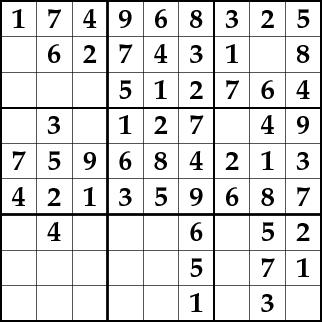
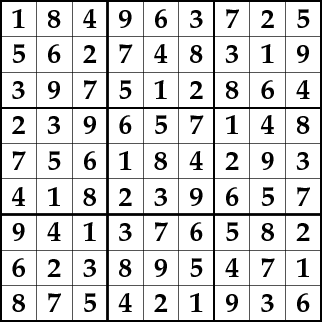

Solving Sudoku with Prolog
Prolog solution
Prolog is extremely well suited for
solving combinatorial
tasks like Sudoku.
For example, using constraints, a
valid Sudoku board can be concisely expressed like this:
sudoku(Rows) :-
length(Rows, 9),
maplist(same_length(Rows), Rows),
append(Rows, Vs), Vs ins 1..9,
maplist(all_distinct, Rows),
transpose(Rows, Columns),
maplist(all_distinct, Columns),
Rows = [As,Bs,Cs,Ds,Es,Fs,Gs,Hs,Is],
blocks(As, Bs, Cs),
blocks(Ds, Es, Fs),
blocks(Gs, Hs, Is).
blocks([], [], []).
blocks([N1,N2,N3|Ns1], [N4,N5,N6|Ns2], [N7,N8,N9|Ns3]) :-
all_distinct([N1,N2,N3,N4,N5,N6,N7,N8,N9]),
blocks(Ns1, Ns2, Ns3).
Like all pure Prolog programs,
this predicate can be used in all directions. You can
use it to:
- complete partial squares
- test complete squares
- generate all Sudoku Latin squares.
For example, we can use the code to generate valid
Sudoku boards:
?- sudoku(Rows), maplist(label, Rows), maplist(portray_clause, Rows).
[1, 2, 3, 4, 5, 6, 7, 8, 9].
[4, 5, 6, 7, 8, 9, 1, 2, 3].
[7, 8, 9, 1, 2, 3, 4, 5, 6].
[2, 1, 4, 3, 6, 5, 8, 9, 7].
[3, 6, 5, 8, 9, 7, 2, 1, 4].
[8, 9, 7, 2, 1, 4, 3, 6, 5].
[5, 3, 1, 6, 4, 2, 9, 7, 8].
[6, 4, 2, 9, 7, 8, 5, 3, 1].
[9, 7, 8, 5, 3, 1, 6, 4, 2].
Rows = [[1, 2, 3, 4, 5, 6, 7, 8|...], [4, 5, 6, 7, 8, 9, 1|...] | ... ] .
A partial instantiation of the rows turns this into
a completion task, which is what we commonly
understand as a Sudoku puzzle.
Source file
Prolog source file: sudoku.pl
The source file contains:
- the Prolog formulation of Sudoku puzzles which is shown above
- PostScript instructions for
showing animations of
the search process
- sample Sudoku instances, available is problem/2.
You can try it with SWI-Prolog:
$ swipl sudoku.pl
Sample query and answer:
?- problem(1, Rows),
sudoku(Rows),
maplist(labeling([ff]), Rows),
maplist(portray_clause, Rows).
[1, 5, 6, 8, 9, 4, 3, 2, 7].
[9, 2, 8, 7, 3, 1, 4, 5, 6].
[4, 7, 3, 2, 6, 5, 9, 1, 8].
[3, 6, 2, 4, 1, 7, 8, 9, 5].
[7, 8, 9, 3, 5, 2, 6, 4, 1].
[5, 1, 4, 9, 8, 6, 2, 7, 3].
[8, 3, 1, 5, 4, 9, 7, 6, 2].
[6, 9, 7, 1, 2, 3, 5, 8, 4].
[2, 4, 5, 6, 7, 8, 1, 3, 9].
Rows = [[1, 5, 6, 8, 9, 4, 3, 2|...], ...]
Animations
If you have the PostScript viewer "gs" installed, you can view an
animation of the constraint solving process.
Sample PostScript file, a self-contained saved animation
for a Sudoku puzzle (open it with "gv" or "gs" to view
it): solved.ps.gz
Here are a few example queries that you can try,
using show/2 to animate the search:
?- problem(1, Rows), show([], Rows).
?- problem(3, Rows), show([ff], Rows).
?- show([], Rows).
The arguments of show/2 are:
- a list of labeling options as described in the
CLP(FD) documentation.
- a list of 9 rows that are to be
completed to a Sudoku Latin square. Each row is a list of 9
variables, which can also be already instantiated to integers to
fill in initial elements.
As a side-effect, you see an animation of the constraint solving
process. To make the search more interesting, you can
replace all_distinct/1 with the weaker
constraint all_different/1 in the source file.
Here's an intermediate state:

And here is a picture of a finished animation:

Further reading:
Neumerkel
at
al., Visualizing
Solutions with Viewers.
More CLP(FD) examples: https://github.com/triska/clpfd
Main page